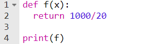
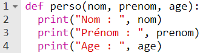
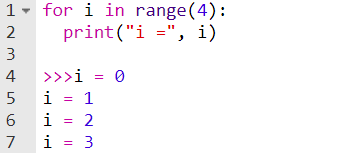
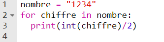
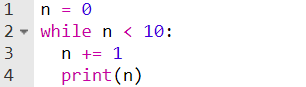

Résumé
-
I. Fonctions
Une fonction est une suite d’instructions qu’on définit à un moment précis, qu'on peut appeler à n’importe quel moment dans le programme et qui fera ce qu’on lui a ordonné. Par exemple, on créer une fonction
fqui renvoie le quotient de 1000 par 20 :On utilise le mot clé
returnau lieu deprintpour renvoyer en mémoire le résultat de la fonction au lieu de l'afficher simplement dans le terminal.Les fonctions peuvent prendrent des informations complémentaires appelées "paramètres/arguments" dont on va se servir à l'intérieur de la fonction. Ici, la fonction affiche mes informations personnelles :
 -
II. Boucles
Les boucles sont également une notion à avoir en tête. Il en existe 2 types : les boucles
for eachetwhile. La bouclefor eachrépète un nombre de fois donné des instructions :Les boucles
for eachpeuvent aussi parcourir des chaînes de caractères, des listes, etc... pour en afficher le contenu ou pour effectuer des oppérations avec. Ici, la fonction affiche chaque chiffre divisé par 2 :En python, ces types de données qu'une boucle peut traverser sont appelées "itérables".
Les boucles
while, elles, on ne sait quand elles s'arrêtent. Elles vérifient une condition à chaque tours et tant que celle-ci est vérifiée, les instructions dans la boucle sont exécutées. La boucle ci-dessous ajoute 1 à n est l'affiche tant qu'il est inférieur à 10 (c'est la condition dont on parlait) : -
III. Modules & packages
Les modules et packages ont eu une importance capitale dans la réalisation de notre projet. Sans eux, il aurait été impossible de faire ce que nous avons fait. Mais alors, qu'est-ce qu'un module ? Eh bien, un module est simplement un fichier python, qui a un nom et une extension en
.py. Quand vous écrivez un programme en cours de SNT sur pyto, vous faites un module. Vous en connaissez déjà plusieurs comme random, math...Un package, lui, est une collection/ un ensemble de modules (donc de fichiers python). Et c'est d'eux dont en s'est servis. Le premier est opencv-python, qui permet de gérer l'accès à la caméra, les convertions de couleur... et numpy, un package très complet développé par la communauté et permettant d'effectuer des calcul avancé, travailler avec des tableaux en deux dimensions...